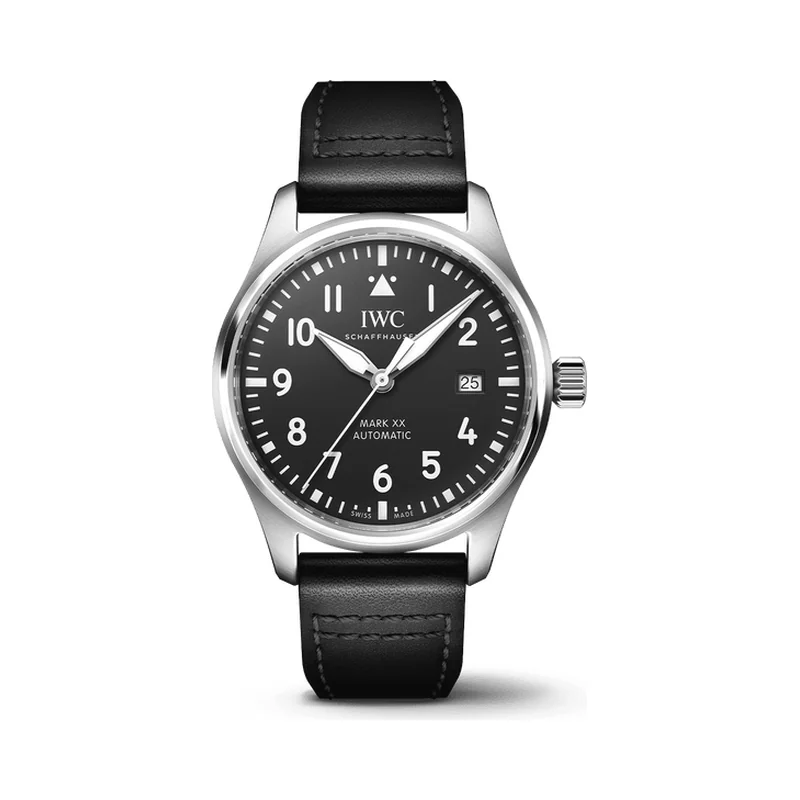

Encyclopedia / IWC / Pilot's Watch Mark XX

Current deal · verified Oct 19, 2026, 10:12 PM ET
$4,987.50 Retail $5,900
Save $912.50 (15%) · new · Jomashop
Ref. IW328201 (black dial, calfskin strap) · Listed new on Jomashop
Brand new from a grey-market dealer; the warranty may be Jomashop's rather than IWC's. WatchMaxx showed this ref out of stock. Prices change fast; check the store before you buy.
Price comparison: fixed-price listings
| Store | Condition | Box & papers | Asking price | Link | Checked |
|---|---|---|---|---|---|
| Watchfinder | new | Yes | $4,960 | View | Oct 19, 2026 |
| Watchfinder | pre-owned | Yes | $5,160 | View | Oct 19, 2026 |
Fixed-price (buy-now) asking prices in USD for ref. IW328201, cheapest new and cheapest pre-owned with box and papers per store, sorted low to high and checked Oct 19, 2026 (ET). Buy-now listings only. Pre-owned listings are shown only when the listing states box and papers. * New from a grey-market dealer: comes boxed, but the warranty card may be the dealer's rather than the brand's. Chrono24 rows are individual third-party marketplace sellers. Prices change fast; confirm with the store.
What it really costs
| Market | Price | Source |
|---|---|---|
| IWC US retail | $5,900 (IW328201) · $6,900 (IW328202, bracelet) | iwc.com |
| Grey-market new | $4,987.50 at Jomashop | jomashop.com |
| Pre-owned | about $4,450 – $5,900 (median ~$5,100) | Chrono24 |
All prices in USD, checked Oct 19, 2026 (ET). Pre-owned ranges are the middle 80% of asking prices on the first Chrono24 results page for that ref (about 60 listings, used and some unworn), fixed-price listings only. Grey-market = brand-new from a non-authorized dealer.
Buying guide
Key references
| Ref. | What it is | US retail |
|---|---|---|
| IW328201 | 40 mm steel, black dial, black calfskin strap with EasX-CHANGE | $5,900 |
| IW328202 | Same watch, black dial on a steel bracelet | $6,900 |
Which one I'd pick
Strap vs bracelet: the strap IW328201 is $1,000 cheaper at retail than the bracelet IW328202. The EasX-CHANGE system makes it easy to add a bracelet or other straps later.
New vs pre-owned: new at $4,987.50 sits just under the pre-owned median ($5,100). Buy new.
What to check before you buy
- Box and papers: a brand warranty card matters for resale. Grey-market new watches may carry the dealer's warranty instead of the brand's, so ask which one you're getting.
- Ref check: Mark XX refs differ by dial and strap. Match IW328201 before comparing prices.
- Fakes and red flags: avoid prices far below the grey-market numbers above, stock photos only, or sellers who won't show the caseback, clasp and warranty card.
Alternatives worth a look
- IWC Portugieser Chronograph: IWC's dressier chronograph. (41 mm stainless steel, Calibre 69355, retail $9,200)
- Hamilton Khaki Field Mechanical: A tool watch with military roots for a fraction of the price. (38 mm stainless steel, Calibre H-50, retail $675 (38 mm))
- Breitling Navitimer B01 Chronograph 43: A pilot's chronograph, well below retail. (43 mm stainless steel, Breitling Manufacture Calibre 01, retail $10,700 (AB0138211B1A1, black dial, steel bracelet))
History
IWC was one of twelve makers, known to collectors as the 'Dirty Dozen', that supplied the British War Office under the W.W.W. specification, resulting in the Mark X.
IWC launched the Pilot's Watch Mark XX in 2022 with black and blue dials, and later added more colours and bracelet versions.
It uses the IWC-manufactured Calibre 32111, a 4 Hz automatic with a 120-hour power reserve, in a 40 mm, 10.8 mm steel case.
Specifications
| Brand | IWC |
|---|---|
| Model | Pilot's Watch Mark XX |
| Key references | IW328201 |
| Launch year | 2022 |
| Case | 40 mm stainless steel |
| Strap | Black calfskin with EasX-CHANGE quick-change system |
| Thickness | 10.8 mm |
| Movement | IWC Calibre 32111, automatic |
| Power reserve | 120 hours |
| Water resistance | 100 m |
| Approx. US retail (Oct 2026) | $5,900 (IW328201) |
Specs from the brand's official product page for the main reference. Retail prices are list prices, not market value, and change often.
Highlights
- 120-hour power reserve
- Pressure-drop-protected sapphire crystal
- EasX-CHANGE strap system
FAQ
How much is an IWC Mark XX?
IWC's US site lists the IW328201 at $5,900 and the bracelet IW328202 at $6,900 (checked Oct 19, 2026). The IW328201 was $4,987.50 new at Jomashop.
What's the power reserve of the Mark XX?
120 hours (5 days), from the IWC-manufactured Calibre 32111.
When did the Mark XX come out?
In 2022.
What size is the Mark XX?
40 mm across and 10.8 mm thick.
Want this watch for less?
Every week I hunt down genuine deals on watches like the Pilot's Watch Mark XX and send the best ones. Free, one email a week.
Get the free weekly issuePrices and availability last checked Oct 19, 2026. No affiliate links: I don't earn anything if you buy. Sources are listed in our research notes and linked above.